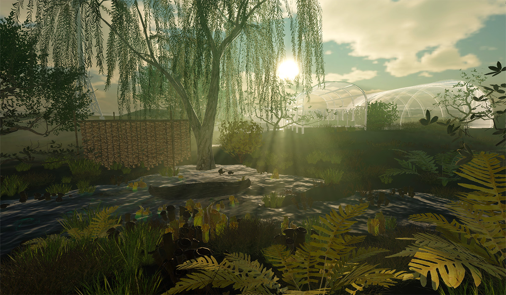
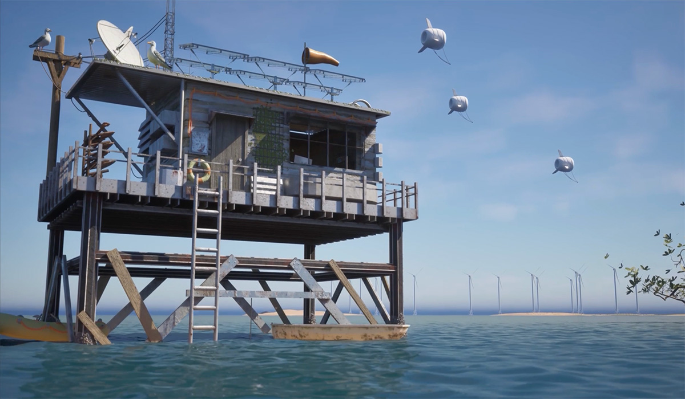
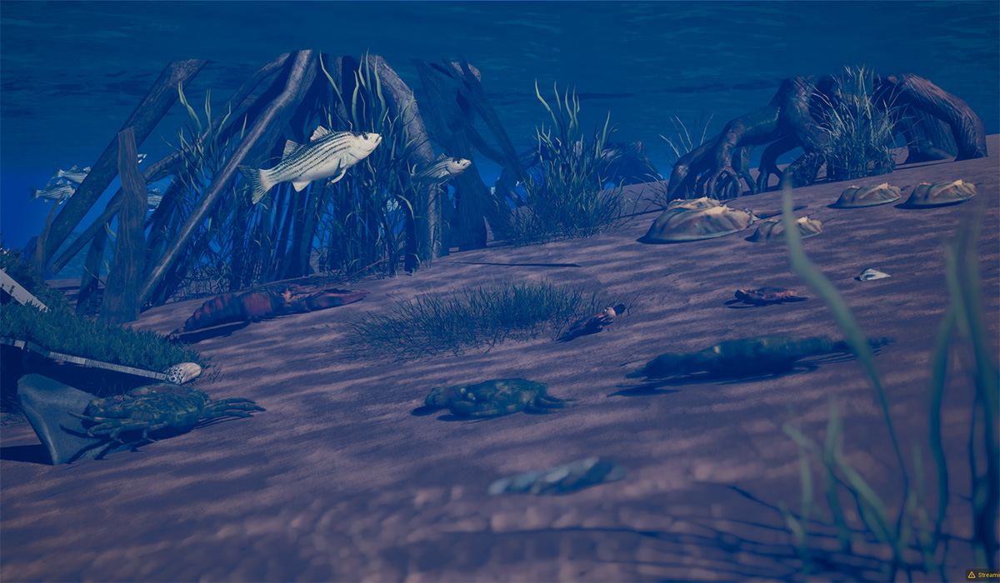
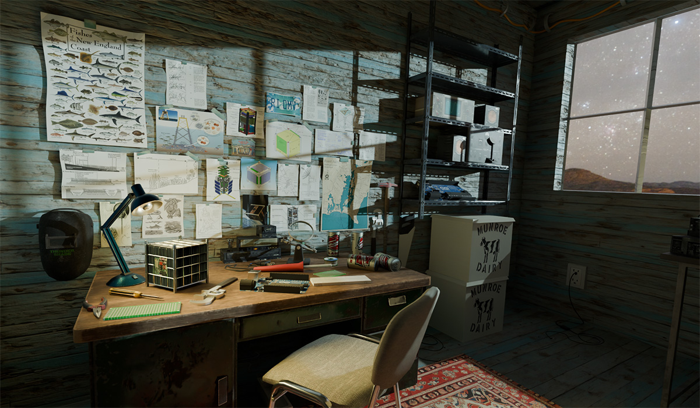
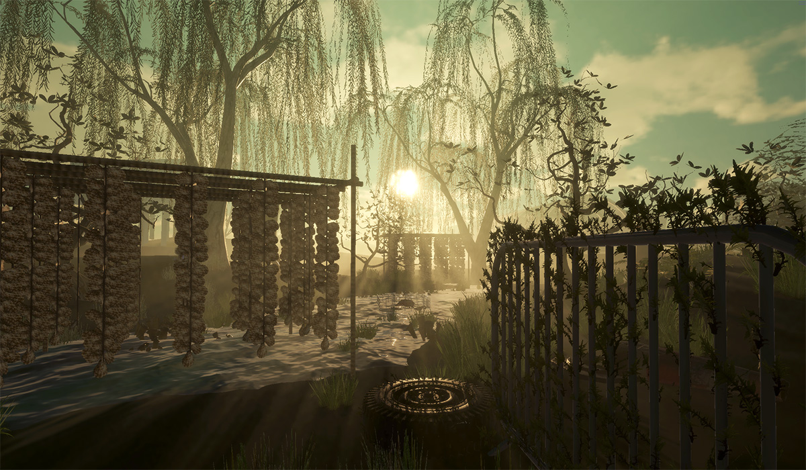
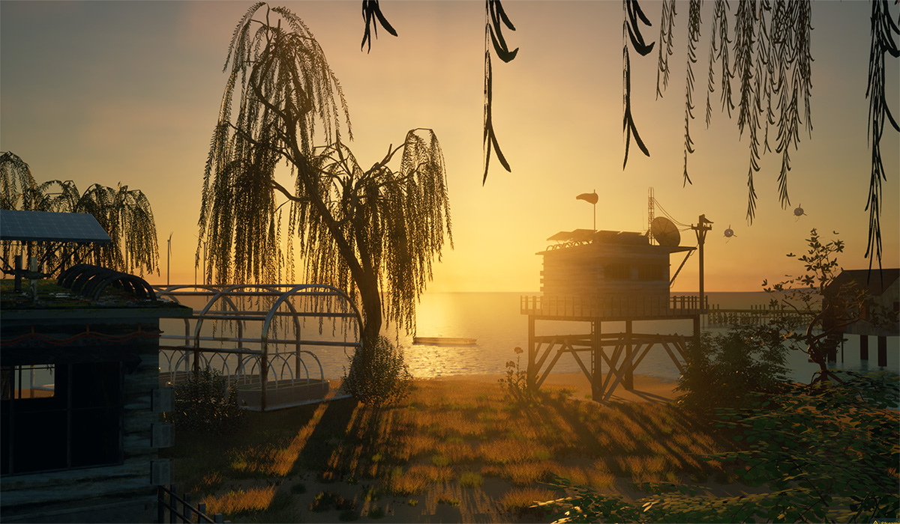
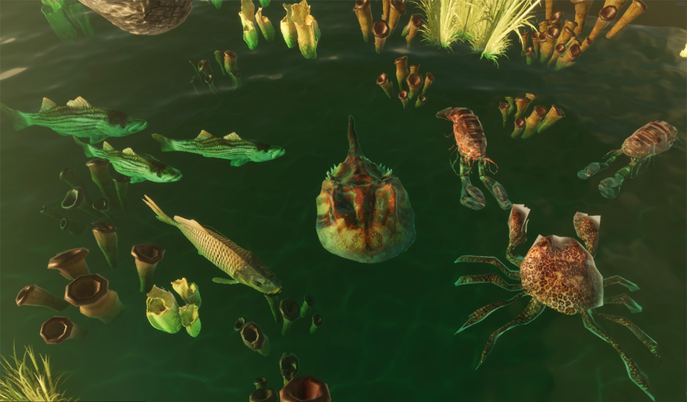
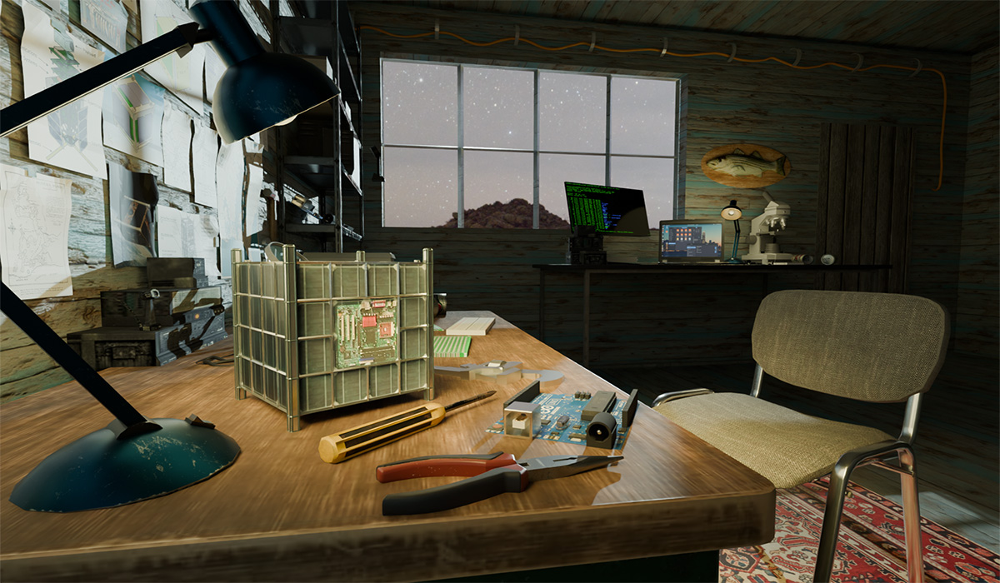

Tidelands 2100: Imagining Coastal Futures Beyond Displacement
Tidelands 2100 is an in-progress climate future game set along the Rhode Island coast in the year 2100. In the wake of drastic sea level rise, the local societal, technological, and ecological systems have adapted, laying the groundwork for a protopic future catalyzed by natural disaster.
As the lead 3D Artist and Art Director on Tidelands, I’ve created flora, fauna, and buildings, built a working prototype in Unity, and assisted with the environment development in UE5.
Credits:
Ian Haut- Environment Artist
Annie Chen and Zoe Lee of BEAM Lab- project directors
Ryan Lettieri- Graphic Design
Healey Koch- Character Design







